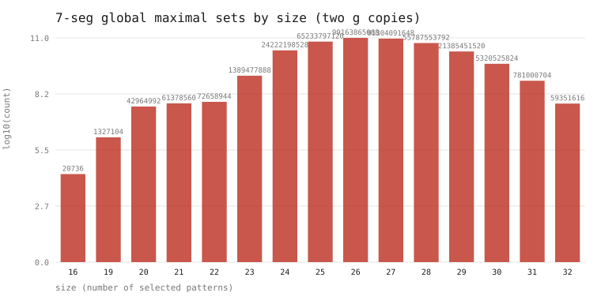

Glyph editor
Click a segment to toggle it. Pick a cover to see what survives. A conflict means two slots become identical under that cover.
Font
Conflicts
Selected conflict
Conflict matrix
Tens
Ones
Drag the leaf to a side. The covered side is hidden on both digits; the lists show every digit that could still be read. Try “Standard” vs “Optimised” to see the difference.
This is the human-calibration harness for M3. Responses are stored in localStorage; export the JSON to fit the weights.
What the foundation found
Seven-segment display, four possible one-side covers: top removes a, bottom removes d, left removes e,f, right removes b,c; the middle g is never covered.
| maximum unambiguous set | 32 |
|---|---|
| minimum maximal set | 16 |
| attainable maximal sizes | 16, 19–32 (17 and 18 do not exist) |
| maximal sets per g / globally | 604,008 / 364,825,664,064 |
| character capacity | 32 (decimal and hex fit; 36-letter alphanumeric and Base64 do not) |
| construction | 4 cells × a matching of K₄,₄, plus cross-cell disjointness and hole-covering |
| well-covered criterion | K_{q1} □ … □ K_{qd} is well-covered iff q1 > Σi≥2(q_i − 1) |
The per-g graph is K₂ □ K₂ □ K₄ □ K₄; the global graph is two disjoint copies because g is never covered. The 9/10 gap is not a periodic sequence: it is the set of feasible cell-size patterns.
Recognisability is checked with a geometry-based (components, holes) signature and a nearest-standard / segment-fault check. The source note’s hex font fails the nearest check for 6 and 8; no 16-glyph 0–F nearest-preserving font exists. The optimised decimal candidate changes 1, 3, 5, 8 (4 flips) and is the “Optimised 0–9” preset in the Lab.


Full notes: docs/FOUNDATION.md · docs/RECOGNITION.md · roadmap.